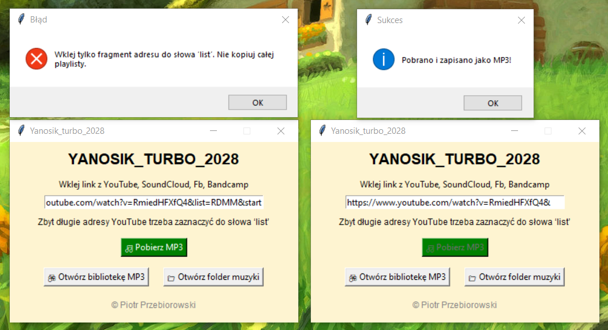
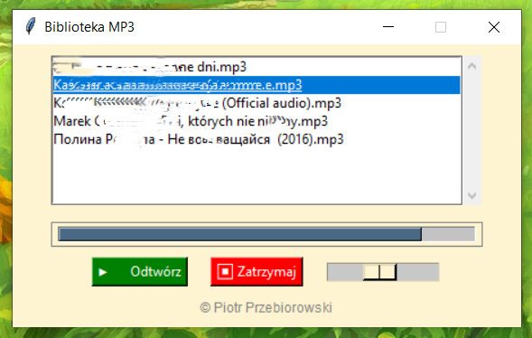

📌 Co to jest?
🎵 Yanosik Turbo 1.0 to lekka i intuicyjna aplikacja, która pozwala Ci stworzyć własną bibliotekę muzyki z ulubionych źródeł. Nie potrzebujesz konta ani instalacji – program działa od razu i jest całkowicie przenośny.
▶️ Jak zacząć?
Folder z aplikacją możesz umieścić w dowolnym miejscu na dysku. Dla łatwego dostępu przypnij plik .exe do paska zadań. Po uruchomieniu wklej dokładnie adres z YouTube, SoundCloud lub innego obsługiwanego źródła.
Jeśli adres zawiera list= (czyli wskazuje playlistę), nie pobieraj całego linku jako MP4. Zaznacz tylko fragment do słowa list – wówczas program poradzi sobie bez problemu.
🎧 Odtwarzanie muzyki
Po pobraniu MP3 możesz otworzyć bibliotekę klikając „Biblioteka MP3”. Zobaczysz prosty odtwarzacz z listą wszystkich pobranych utworów.
Wybierz piosenkę, kliknij Play i ciesz się muzyką. Możesz też przewijać utwory na pasku postępu. Program automatycznie odtwarza kolejne piosenki.
Aby szybko znaleźć folder zapisu, kliknij przycisk „Otwórz folder muzyki”.